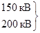
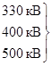

МИНИСТЕРСТВО
СТРОИТЕЛЬСТВА ПРЕДПРИЯТИЙ
НЕФТЯНОЙ И ГАЗОВОЙ ПРОМЫШЛЕННОСТИ
Всесоюзный научно-исследовательский институт
по строительству магистральный трубопроводов
«ВНИИСТ»
ИНСТРУКЦИЯ
ПО
БЕЗОПАСНОМУ ВЕДЕНИЮ РАБОТ
В ОХРАННЫХ ЗОНАХ ДЕЙСТВУЮЩИХ
КОММУНИКАЦИЙ
ВСН 159-83
Миннефтегазстрой
МОСКВА 1983
«Инструкция по безопасному ведению работ в охранных зонах действующих коммуникаций» составлена на основе действующих нормативно-технических документов и опыта строительства магистральных трубопроводов в различных регионах нашей страны.
Инструкция предназначена для инженерно-технических работников, участвующих в строительстве новых трубопроводов в охранных зонах действующих коммуникаций.
Инструкция разработана отделом охраны труда ВНИИСТа и согласована с отделом охраны труда и техники безопасности Миннефтегазстроя, а также с ЦК профсоюза рабочих нефтяной и газовой промышленности.
|
Министерство строительства предприятий нефтяной и газовой промышленности |
Ведомственные строительные нормы |
ВСН 159-83 Миннефтегазстрой |
|
Инструкция по безопасному
ведению работ |
Впервые |
|
Внесена |
Утверждена |
Срок введения в действие |
1.1. Настоящая Инструкция распространяется на все работ, выполняемых в охранных зонах действующих коммуникаций (магистральные трубопроводы, линии электропередачи и др.).
Строительные работы в охранных зонах требуют особой осторожности и внимания строителей - не только инженерно-технических работников, но и рабочих, а также строгого соблюдения технической дисциплины и правил техники безопасности.
1.2. Несчастные случаи являются следствием грубейших нарушений требований техники безопасности и личной недисциплинированности строителей.
Основные причины несчастных случаев и аварий:
наезд строительных машин (бульдозером и др.) на действующий трубопровод, не обозначенный указательными знаками, а также без сопровождения лица, ответственного за работу в охранных зонах;
переезд строительных машин (бульдозеров, трубоукладчиков и т.п.) через действующий трубопровод в не предусмотренном для этого места и в распутицу по поврежденному переезду, а также без сопровождения лица, ответственного за работу в охранной зоне;
нетехнологические стоянки и остановки тракторов и других строительных машин в охранной зоне действующего трубопровода без письменного разрешения эксплуатирующей организации;
монтаж трубопроводов грузоподъемными машинами в охранной зоне линий электропередач (ЛЭП) без наряда-допуска, проекта производства работ и технического надзора;
касание электропроводов стрелой автокрана при выполнении грузоподъемных работ в охранной зоне ЛЭП;
выполнение грузоподъемных работ в охранной зоне ЛЭП автокраном с неисправным автоматическим сигнализатором опасного напряжения;
работа буровых установок вблизи ЛЭП с несоблюдением расстояний до электропроводов от их вышек, указанных в правилах проведения работ в охранных зонах;
обрыв электропроводов стрелой грузоподъемной машины или экскаватора при их передвижении в охранной зоне ЛЭП;
удаление мешающих работе оборванных электропроводов, находящихся под напряжением, руками без диэлектрических средств индивидуальной защиты (резиновых перчаток и т.п.);
работа электриков без разрешения по ремонту электроустановок, принадлежащих другим организациям;
обрыв или касание электропроводов стрелой автокрана, находящейся в поднятом рабочем состоянии, при проезде под ЛЭП, что запрещается как правилами эксплуатации, так и правилами безопасности;
касание руками груза, поднятого стрелой грузоподъемной машины, когда стрела данной машины коснулась электропроводов, находящихся под напряжением действующей ЛЭП.
«Правилами техники безопасности при строительстве магистральных стальных трубопроводов» (М., Недра, 1982);
«Правилами охраны магистральных трубопроводов», утвержденными постановлением Совета Министров СССР от 12 апреля 1979г., № 341 (М., Мингазпром, 1982);
«Инструкцией по производству строительных работ в охранных зонах магистральных трубопроводов Министерства газовой промышленности» (М., Мингазпром, 1982);
«Правилами охраны линий связи» (М., Связь, 1969);
«Правилами охраны высоковольтных электрических сетей» (М., Госэнергонадзор, 1961);
«Правилами охраны электрических сетей напряжением до 1000 В» (М., Госэнергонадзор, 1972);
«Правилами техники безопасности при строительстве и монтажных работах на действующих и вблизи ЛЭП» (М., Энергия, 1970);
ГОСТ 12.1.013-78 СЭОТ. Строительство. Электробезопасность. Общие требования.
1.4. Для исключения возможности повреждения действующих коммуникаций в процессе строительства устанавливаются охранные зоны:
вдоль трасс действующих трубопроводов, проходящих на землях несельскохозяйственного назначения, - по 50 м от оси действующего трубопровода с каждой стороны; на землях сельскохозяйственного назначения - по 25 м от оси действующего трубопровода с каждой стороны;
вдоль подводных действующих многониточных трубопроводов - по 100 м от оси крайних ниток действующих трубопроводов;
вокруг емкостей для хранения и разгазирования конденсата, земляных амбаров для аварийного выпуска нефти и нефтепродуктов - по 50 м во все стороны от границ территорий указанных объектов;
вокруг перекачивающих и наливных насосных станций, резервуарных парков, компрессорных и газораспределительных станций, эстакад, станций подземного хранения газа, пунктов подогрева нефти и нефтепродуктов - по 100 м от границ территорий указанных объектов;
вдоль действующих воздушных линий электропередачи по прямой линии в обе стороны от крайних проводов напряжением:
до 1 кВ - по 2 м;
от 1 до 20 кВ включительно - по 10 м;
до 35 кВ - по 15 м;
110 кВ - по 20 м;


750 кВ - по 40 м;
800 кВ (постоянный ток) - по 30 м;
вдоль действующих подземных электрокабелей - по 5 м в обе стороны от коммуникаций;
вдоль действующих подземных кабелей связи - по 2 м в обе стороны от коммуникаций.
1.5. В охранной зоне действующих коммуникаций без письменного разрешения эксплуатирующей их организации запрещается:
производить всякого рода горные, строительные, монтажные и взрывные работы, планировку грунта;
сооружать проезды и переезды через трассы действующих коммуникаций, а также размещать коллективные и индивидуальные сады и огороды;
производить мелиоративные земляные работы, сооружать оросительные и осушительные системы;
высаживать деревья и кустарники, производить любые сельскохозяйственные работы;
производить геологосъемочные, поисковые, геодезические и другие изыскательные работы, связанные с устройством скважин, шурфов и взятием проб грунта.
1.6. В охранной зоне действующих коммуникаций категорически запрещается:
складировать трубы, изоляционные, горюче-смазочные материалы, древесину и другие материалы;
разводить костры;
располагать базы стоянок и ремонта механизмов, строительной техники и автотранспорта, вагоны-домики и другое оборудование;
перемещать, засыпать и ломать опознавательные и сигнальные знаки и контрольно-измерительные приборы;
устраивать всякого рода свалки, выливать растворы кислот, солей, щелочей и других жидкостей;
размещать какие-либо открытые или закрытые источники огня;
открывать люки, калитки и двери усилительных пунктов кабельной связи, ограждений узлов линейной арматуры, станций катодной и дренажной защиты, линейных и смотровых колодцев и других линейных устройств; открывать и закрывать краны и задвижки; отключать или включать средства связи, энергоснабжения и телемеханики действующих коммуникаций;
разрушать берегоукрепительные сооружения, водопропускные устройства, земляные и иные сооружения, предохраняющие коммуникации от разрушения, а прилегающую территорию и окружающую местность от аварийного разлива транспортируемого продукта;
водоплавающим средствам бросать якоря, проходить с отданными якорями, цепями, лотами, волокушами и тралами, производить дноуглубительные и землечерпательные работы.
1.7. В случае необходимости с письменного разрешения эксплуатирующей организации разрешается в охранной зоне магистрального трубопровода временное складирование труб и других материалов для строительства переходов, вставок и т.п. в соответствии с проектом производства работ.
1.8. Весь персонал, занятый на строительстве объектов в охранной зоне действующих коммуникаций, должен пройти дополнительное обучение по безопасным методам труда, инструктаж по последовательности безопасного выполнения технологических операций и проверку знаний независимо от сроков предыдущего обучения, инструктажа и проверки знаний по технике безопасности. Обучение, инструктаж и проверка знаний по технике безопасности должны быть оформлены документально (журналы инструктажа, протоколы по проверке знаний, удостоверения и т.п.). Персонал, не прошедший обучения, инструктажа и проверки знаний по технике безопасности, к работе в охранной зоне действующих коммуникаций не допускается.
Кроме вышеуказанного, всем рабочим следует выдать на руки производственные инструкции по технике безопасности, которые должны быть изучены и строго выполняться при производстве работ; всех работающих необходимо также ознакомить с местонахождением действующих коммуникаций и их сооружений, с их обозначением на местности и с проектом производства работ.
При этом все работающие в охранной зоне должны быть предупреждены, что в случае нарушения правил техники безопасности, трудовой и технологической дисциплины они будут отстранены от работы вплоть до увольнения.
1.9. Перед началом работ в охранной зоне всем рабочим бригадам выдается наряд-допуск, в котором должны быть указаны мероприятия, обеспечивающие безопасность производства работ.
Кроме того, наряд-допуск выдается также машинистам экскаваторов, тракторов, бульдозеров, трубоукладчиков, водителям автомашин и машинистам всех других механизмов, применяемых при строительстве в охранной зоне действующих коммуникаций.
Наряд-допуск выдается на весь срок работы в условиях охранной зоны. В случае изменения условий работы (замена механизмов, марки машин, изменение рельефа местности, грунта, климата и т.п.) наряд-допуск заменяется новым.
1.10. Строительные организации до рассмотрения соответствующими органами местных Советов народных депутатов ходатайств о предоставлении земельных участков должны согласовывать строительство объектов с организацией, эксплуатирующей действующие коммуникации.
1.11. Перед началом строительных работ организации, производящие эти работы, обязаны получить письменное разрешение эксплуатирующей организации на производство работ в заданной зоне действующих коммуникаций по установленной форме (приложение).
Производство работ без разрешения или по разрешению, срок действия которого истек, запрещается.
1.12. Строительная организация, получившая разрешение на производство работ в охранной зоне, обязана до начала работ вызвать представителя эксплуатирующей организации для установления по технической документации, приборами-искателями и шурфованием точного местонахождения и фактической глубины заложения действующей коммуникации, определения ее технического состояния и обнаружения возможных утечек транспортируемого продукта, если это трубопровод, а также взаиморасположения действующих коммуникаций с новым запроектированным объектом (трубопровод, кабель и т.п.).
Все вышеперечисленные данные необходимо отразить в проекте производства работ, особо выделив места, где заглубление коммуникаций недостаточно. В проекте производства работ строительная организация обязана предусмотреть меры, исключающие возможность повреждения действующих коммуникаций наездами машин, и меры безопасности работающих.
Утечки продукта из трубопровода и другие дефекты на действующих коммуникациях должны быть устранены силами и средствами эксплуатирующей организации до начала строительных работ.
При обнаружении на месте производства работ подземных коммуникаций и сооружений, не значащихся в проектной документации, строительные работы следует приостановить, принять меры по обеспечению сохранности этих коммуникаций и сооружений, выявлению эксплуатирующих их организации и вызову ее представителя на место работ.
1.13. Определение местонахождения и технического состояния подземных действующих коммуникаций и их сооружений производится в границах всей зоны производства работ, и ответственность за это несет эксплуатирующая организация.
Трасса действующих коммуникаций и их сооружений в границах зоны производства работ должна быть закреплена знаками высотой 1,5 - 2,0 м с указанием фактической глубины заложения, установленными на прямых участках трассы в пределах видимости, но не более чем через 50 м, а на всех участках углов поворота через 10 м, в местах пересечения со строящимися коммуникациями, а также на границах разработки грунта вручную. Опасные места (недостаточное заглубление, признаки выхода газа или нефти из трубопроводов и др.) должны быть обозначены особо.
Во избежание повреждения и возможных аварий все знаки безопасности устанавливаются на расстояниях не менее 2 м от стенки (от края) действующих коммуникаций.
Работы по установке знаков и отрытию шурфов выполняют силами и средствами строительной организации по указанию представителя эксплуатирующей организации.
До обозначения трассы знаками безопасности ведение строительных работ не допускается.
1.14. О проведенной работе по уточнению местоположения трассы действующих коммуникаций и их сооружений составляется акт с участием представителей генподрядной и эксплуатирующей организаций. К акту прилагают ситуационный план (схему) трассы с указанием: местоположения, диаметра (если это трубопровод) и глубины заложения действующих коммуникаций и их сооружений, а также их необходимые характеристики, привязки коммуникаций, сооружений, вырытых шурфов и установленных закрепительных знаков с указанием наличия и устранения утечек транспортируемого продукта, если это трубопровод, и стадии работ, на какой должен присутствовать представитель эксплуатирующей организации.
1.15. В ситуационном плане (схеме), кроме вышеперечисленного в п. 1.14 настоящей Инструкции, должны быть четко указаны расстояния между действующими и строящимися коммуникациями. Если коммуникации (действующие и строящиеся) проходят по болотистой местности, тундре, пустыне, в горных условиях и т.п., вышеуказанные расстояния уточняют по проекту производства работ.
В мероприятиях должны быть предусмотрены:
порядок производства работ в охранной зоне;
места переездов строительных машин и транспорта через действующие коммуникации и оборудование этих переездов;
меры, предупреждающие просадку грунта при разработке его в непосредственной близости от действующих коммуникаций, особенно при заглублении ниже уровня их заложения;
меры предосторожности, обеспечивающие безопасное ведение работ (например, снижение давления в действующем трубопроводе и др.).
1.17. До начала работ в охранной зоне действующих коммуникаций строительная организация, которая будет вести эти работы, должна разработать и утвердить согласованный с эксплуатирующей организацией проект производства работ (ППР), в котором должны быть предусмотрены необходимые меры безопасности с учетом мероприятий, указанных в п. 1.16 настоящей Инструкции.
1.18. Перед началом работ по строительной организации, производящей строительные работы в охранной зоне действующих коммуникаций, из числа инженерно-технических работников должно быть назначено лицо, ответственное за безопасное производство работ (руководитель работ - прораб, мастер), под постоянным руководством которого в охранной зоне должны выполняться все виды работ.
1.19. Перед началом работы в глубокой траншее (колодце), расположенной вблизи действующих коммуникаций, руководитель работ (производитель работ, мастер) должен проверить газоанализатором, если это трубопровод, отсутствие газа на рабочем месте и только после этого разрешить спуск рабочих. При обнаружении газа недопустимой концентрации (более 1 %) необходимо траншею (колодец) тщательно проветрить и повторно проверить загазованность.
1.20. При производстве работ в охранной зоне механизированные колонны, трубосварочные и другие базы, стеллажи, стоянка механизмов и машин, склады горюче-смазочных материалов, стройматериалов, оборудования, жилые городки и т.п. должны размещаться за пределами охранной зоны действующих коммуникаций.
1.21. Проезд землеройных и других машин над действующими коммуникациями допускается только по специально оборудованным переездам в местах, указанных эксплуатирующей организацией. Эти переезды устраивают из сборных железобетонных плит, соединенных стальными планками, приваренными к монтажным петлям. На участках, где действующие коммуникации заглублены менее 0,8 м, должны быть установлены знаки с надписями, предупреждающими об особой опасности. В местах, не оборудованных переездами через действующие коммуникации, проезд строительной техники (трактора, экскаватора, бульдозера, трубоукладчика и т.п.) и автотранспорта запрещен.
1.22. Передвижение строительных машин и механизмов в темное время суток, а также во время нетехнологических перерывов без сопровождения ответственного лица за безопасное производство работ в охранной зоне действующих коммуникаций запрещается.
1.23. Ввиду возможных утечек газа, нефти, нефтепродуктов или других транспортируемых продуктов (аммиака, этилена и др.) нельзя находиться на расстоянии менее 5 м от продувочных свечей, метанольниц и конденсатосборников действующего трубопровода.
1.24. На всех технологических колодцах и контрольно-измерительных колонках действующих коммуникаций должны быть установлены опознавательные знаки по ГОСТ 12.4.026-76, расположенные на высоте 2,5 м от поверхности земли.
1.25. В процессе строительства в охранной зоне действующих коммуникаций строительная организация обязана письменно, за пять суток до начала, уведомить эксплуатирующую организацию о времени производства тех этапов работ, специально указанных в выданном разрешении, при которых необходимо присутствие ее представителя.
Руководители эксплуатирующей организации обязаны обеспечить своевременную явку своих представителей к месту работ.
1.26. В случае повреждения коммуникации или обнаружения утечки транспортируемого продукта, если это трубопровод, в процессе производства работ весь персонал и технические средства (машины, механизмы и т.д.) должны быть немедленно отведены за пределы охранной зоны, а эксплуатирующая организация извещена о повреждении (утечке).
До прибытия аварийной ремонтно-восстановительной бригады эксплуатирующей организации руководитель строительных работ должен принять меры по обеспечению охраны аварийного участка для предупреждения доступа опасную зону посторонних лиц и транспортных средств, а по ее прибытии принять участие в быстрейшей ликвидации аварии, для чего он должен выделить рабочую силу и механизмы и обеспечить безопасность их работы.
1.27. Представители эксплуатирующей организации и органов Госгазнадзора, Госэнергонадзора и других организаций по надзору за строительством имеют право приостанавливать работы, выполняемые с нарушением требований, указанных в документах, перечисленных в п. 1.3, и в настоящей Инструкции. При остановке производства работ составляется протокол (акт) с указанием наименования организации, выполнявшей работы, должности и фамилии руководителя работ, должности и фамилии виновного, места, времени и характера нарушения.
ИНЖЕНЕРНАЯ ПОДГОТОВКА ТРАССЫ
2.1. Валка леса в охранной зоне действующего магистрального трубопровода должна выполняться с обеспечением сохранности подземных сооружений трубопровода, свободного вдольтрассового проезда и подъезда к нему на любом участке и исключать загромождение трассы действующего трубопровода поваленными деревьями, кустарниками, порубочными остатками.
2.2. При расчистке трассы валка леса и кустарника должна проводиться в сторону, противоположную действующему трубопроводу; трелевка деревьев через действующий трубопровод запрещается.
2.3. Перед устройством временных дорог и проездов для защиты от сточных и грунтовых вод действующего трубопровода и траншеи строящегося трубопровода следует устраивать водопропускные, водоотводные, а также осушительные сооружения.
2.4. При устройстве основания под временные дороги срезанный грунт запрещается складировать в отвал между строящимся и действующим трубопроводами.
2.5. Тип и конструкция временных дорог и проездов в зависимости от грунтовых и климатических условий устанавливаются проектом организации строительства и уточняются в ППР.
ЗЕМЛЯНЫЕ РАБОТЫ
2.6. Земляные работы в полосе, ограниченной расстоянием 2 м по обе стороны от действующего трубопровода или электрического кабеля, а также в местах пересечения с подземными коммуникациями, должны производиться только вручную в присутствии представителя эксплуатирующей организации.
2.7. Применение ударных механизмов (клин-бабы и других аналогичных механизмов) при производстве земляных работ разрешается на расстоянии не ближе 5 м от действующих трубопроводов и кабелей.
2.8. При проведении работ в охранных зонах отвал грунта из траншеи на действующий трубопровод запрещается. Отвалы минерального и плодородного грунта следует располагать между действующим и прокладываемым трубопроводами, оставляя свободной бровку шириной не менее 0,5 м. Зоны расположения отвалов грунта (минерального и плодородного) указываются в проекте производства работ.
2.9. При производстве взрывных работ по устройству траншей для вновь прокладываемого трубопровода массу зарядов следует назначать с учетом сейсмического воздействия на действующий трубопровод, чтобы избежать его повреждения. Охранная зона при взрывных работах и расстояние закладки зарядов от действующего трубопровода устанавливаются по проекту производства буровзрывных работ.
2.10. Для выполнения работ по засыпке трубопровода механизмами ответственный за проведение работ обязан выдать машинисту механизма по засыпке траншей схему производства работ, показать на месте границы работы механизма и расположение действующих трубопроводов.
2.11. Засыпку траншей вновь прокладываемого трубопровода следует производить траншеезасыпателями или бульдозерами с косыми ножами. Бульдозеры с прямыми ножами в целях предотвращения наездов на действующий трубопровод должны перемещаться под углом 45° к оси траншеи. Границы движения бульдозера при засыпке траншеи должны быть обозначены вешками. Наезд на валик грунта действующего трубопровода запрещается.
2.12. При засыпке (возвращении) плодородного слоя на действующий трубопровод следует принять технологию производства работ по рекультивации, исключающую наезд машин на действующий трубопровод.
2.13. Траншеи в местах пересечения с подземными коммуникациями (включая действующий трубопровод) следует засыпать слоями толщиной не более 0,1 м с тщательным трамбованием.
2.14. Планировку валика действующего трубопровода (в том числе и после зимней засыпки) следует выполнять по специально разработанной и согласованной с эксплуатирующей организацией технологической карте, исключающей наезд механизмов (скрепера, грейдера, планировщика и т.п.) на действующий трубопровод.
СВАРОЧНО-МОНТАЖНЫЕ РАБОТЫ
2.15. Электросварочные и другие огневые работы в охранной зоне действующих трубопроводов должны вестись в соответствии с «Правилами пожарной безопасности при проведении сварочных и других огневых работ на объектах народного хозяйства» (М., Россельхозиздат, 1974).
2.16. Места проведения электросварочных работ следует обеспечить необходимыми средствами пожаротушения. Все рабочие, занятые на электросварочных работах, должны быть обучены пользованию средствами пожаротушения.
2.17. Для выполнения электросварочных работ на близком расстоянии от действующего трубопровода и его сооружений (запорной арматуры, задвижек и т.п.) в ППР должны быть разработаны меры по защите от возможного загорания от искр и сварочного пламени транспортируемого продукта в действующем трубопроводе.
2.18. Места работы электросварщиков должны быть защищены от атмосферных осадков и ветра.
ИЗОЛЯЦИОННО-УКЛАДОЧНЫЕ РАБОТЫ
2.19. Площадки для приготовления мастики и грунтовки должны располагаться на расстоянии не менее 500 м за пределами охранной зоны действующего трубопровода.
2.20. Трубоукладчики, изоляционные машины и другие механизмы, участвующие в данном технологической процессе, должны располагаться с внешней стороны вновь строящегося трубопровода по отношению к действующему.
ЭЛЕКТРОХИМИЧЕСКАЯ ЗАЩИТА ТРУБОПРОВОДОВ ОТ КОРРОЗИИ
2.21. При работах по устройству электрохимической защиты трубопроводов должны соблюдаться, кроме требований, указанных в нормативно-технических документах, перечисленных в п. 1.3 настоящей Инструкции, требования безопасности «Правил технической эксплуатации электроустановок потребителей и правил техники безопасности при эксплуатации электроустановок потребителей» (М., Энергия, 1974).
2.22. Работы по устройству электрохимической защиты строящегося магистрального трубопровода в охранной зоне действующего трубопровода должны начинаться и быть закончены до начала очистки полости и испытания трубопровода. Устройства электрохимической защиты следует включать в работу до начала работы приемочной комиссии, а в зонах блуждающего тока - по истечении, не более месяца после укладки участка трубопровода.
2.23. Присоединение перемычек и проводов контрольно-измерительных пунктов к другим сооружениям, присоединение дренажного кабеля к токоведущим частям электрифицированного рельсового транспорта (электрифицированные железные дороги и др.) следует производить в присутствии соответствующих эксплуатирующих организаций.
2.24. В связи с тем что параллельно действующим трубопроводам проходят линии электропередач и подземные кабели с небольшой глубиной заложения (до 0,4 м), работы по электрохимзащите следует выполнять с особой осторожностью.
ОЧИСТКА ПОЛОСТИ И ИСПЫТАНИЕ ТРУБОПРОВОДОВ
2.25. Очистка полости и испытание трубопровода, проложенного в охранной зоне, выполняются строительно-монтажной организацией под руководством комиссии, состоящей из представителей генподрядчика, субподрядных организаций, эксплуатирующей организации.
2.26. Очистка полости и испытание трубопровода должны проводиться по специальной инструкции (составляемой заказчиком и строительно-монтажной организацией, с учетом условий работ в охранной зоне действующих трубопроводов) в которой излагаются безопасные способы выполнения работ. Инструкция согласовывается с проектной организацией и утверждается председателем комиссии.
3.1. Работа строительных и дорожных машин в охранной зоне ЛЭП разрешается при наличии у машинистов вышеуказанных машин наряда-допуска и при полностью снятом напряжении организацией, эксплуатирующей данную линию электропередачи.
3.2. В случае невозможности снятия напряжения строительно-монтажные работы в охранной зоне ЛЭП допускаются только:
при наличии письменного разрешения эксплуатирующей организации;
при предварительной выдаче машинистам строительных машин и строителям наряда-допуска строительно-монтажной организацией;
при руководстве и непрерывном надзоре ответственного лица из числа инженерно-технических работников, назначенного организацией, ведущей работы, и имеющего квалификационную группу по технике безопасности не ниже III;
при расстоянии от подъемной или подвижной части грузоподъемной машины и от поднимаемого груза в любом положении до ближайшего провода ЛЭП, находящейся под напряжением: до 1 кВ - 1,5 м; от 1 до 20 кВ - 2 м; от 35 до 110 кВ - 4 м; от 150 до 220 кВ - 5 м; 330 кВ - 6 м; от 500 до 750 кВ - 9 м; 800 кВ постоянного тока - 9 м;
при наличии у машинистов строительных машин квалификационной группы по технике безопасности не ниже II;
при заземлении грузоподъемных машин, кроме машин на гусеничном ходу;
при условии, если все работающие в охранной зоне могу оказать первую доврачебную помощь пострадавшим от электрического тока.
3.3. Наряд-допуск на производство строительно-монтажных работ в охранной зоне действующей воздушной ЛЭП должен быть подписан главным инженером строительно-монтажной организации и главным энергетиком.
3.4. При работе вблизи ЛЭП машинисты строительных машин должны следить за тем, чтобы из-за неровности местности не произошло резкого наклона рабочего органа машин (телескопа, стрелы и т.п.) в сторону проводов ЛЭП и их опор.
3.5. При случайном соприкосновении рабочего органа строительных машин с проводом ЛЭП, находящейся под напряжением, или возникновении между ними электрического разряда запрещается до снятия напряжения с ЛЭП или отвода рабочего органа на безопасное расстояние прикасаться, стоя на земле, к строительной машине, сходить с нее на землю или подниматься за нее.
3.6. Если в результате соприкосновения или электрического разряда произойдет загорание строительной машины, не позволяющее оставаться в ней, машинист должен, не держась руками за части машины, спрыгнуть на землю сразу обеими ногами и оставаться на одном месте до снятия напряжения с ЛЭП. Удаляться от машины до снятия напряжения с линии можно прыжками на одной или двух ногах одновременно, или мелкими шагами, не превышающими длину стопы.
3.7. Не допускается работа грузоподъемных машин вблизи ЛЭП, находящейся под напряжением, при ветре, вызывающем отклонение на опасное расстояние свободных (без груза) тросов и канатов, с помощью которых поднимают груз.
3.8. В темное время суток работу с грузоподъемными машинами можно проводить только при отключенной ЛЭП и достаточном освещении рабочего места и ЛЭП.
3.9. При приближении грозы лицо, ответственное за безопасное выполнение работ, обязано прекратить производство работ и вывести всех работающих из зоны выполнения работ на расстояние не ближе 25 м от ЛЭП. Во время грозы производство работ и пребывание людей в охранной зоне запрещается.
3.10. Не допускается пребывание на месте работы в охранной зоне людей, не имеющих прямого отношения к проводимой работе.
3.11. При обнаружении на действующей ЛЭП оборвавшегося и лежащего на земле или провисающего провода запрещается приближаться к нему на расстояние менее 8 м. Одновременно должны быть приняты меры для предупреждения возможного приближения к проводу на указанное выше расстояние посторонних людей. Вблизи оборванного или провисшего провода следует установить охрану из числа работающих, объяснив им опасность не только прикосновения к проводу, но и приближения к нему на расстояние менее 8 м.
Если поставить охрану не представляется возможным, то необходимо установить предупредительные знаки и укрепить их на стойках вблизи обрыва по радиусу с четырех сторон, но не ближе 8 м, т.е. за пределами шагового напряжения.
После устройства ограждения или установки предупредительных знаков следует немедленно сообщить в эксплуатирующую организацию о местонахождении обрыва.
3.12. Передвижение строительных машин и механизмов, а также перевозка оборудования, конструкций и прочего груза под ЛЭП допускаются лишь в том случае, если машина, механизм и транспорт с грузом имеют высоту от отметки дороги или земли не более 5 м при передвижении по автомобильным дорогам и 3,5 м - при передвижении по грейдерным проселочным дорогам и без дорог.
3.13. Расстояние по вертикали между низшей точкой провода и землей (габарит) при высшей температуре воздуха или гололеде (без ветра) должно быть не меньше 6 м для воздушных линий (ВЛ), находящихся под напряжением до 110 кВ; 6,5 м - для ВЛ напряжением 150 кВ; 7 м - для ВЛ напряжением 220 кВ.
3.14. Работы в охранных зонах электрифицированных железных дорог следует осуществлять на основании письменного разрешения и в присутствии соответствующей службы эксплуатации железнодорожного транспорта.
3.15. Допускается работа строительных машин непосредственно под проводами ВЛ электропередачи под напряжением 110 кВ и выше при условии, что расстояние от подъемной или выдвижной частей машин, а также от перемещаемого ими груза, находящихся в любом положении, до ближайшего провода должно быть не менее указанного в п. 3.2 настоящей Инструкции для соответствующего напряжения.
|
Эксплуатирующая организация __________________________________ (объединение, ЛПУМГ) УТВЕРЖДАЮ ______________________________ (должность, ф. и. о.) ___________________________________ (подпись) «__» ___________________19 ___ г. РАЗРЕШЕНИЕ
|
|
№ |
Наименование работ |
Ответственный исполнитель (должность, профессия, Ф. И. О.) |
Начало работ |
Окончание работ |
|
1 |
2 |
3 |
4 |
5 |
Этапы работы, выполняемые в присутствии представителя эксплуатирующей организации:
1.
2.
3.
Меры безопасности при производстве работ (указать условия, при которых будет производиться работа; конкретно меры предосторожности; инструкции, которыми необходимо руководствоваться).
Примечания:
1. Ответственность за соблюдение мер безопасности и сохранность действующего трубопровода и его сооружений в процессе производства работ несет руководитель работ.
2. Письменное уведомление о вызове представителя на работы, выполняемые в его присутствии, передается эксплуатирующей организации за 5 сут до начала этих работ.
3. Производство работ (их этапов) по истечении указанного в разрешении срока запрещается.
Разрешение выдал _____________________________
(должность, ф. и. о.)
________________ «_____» ______________ 19 __ г.
(подпись)
Разрешение получил ____________________________
(должность, ф. и. о.)
__________________ «___» __________________19 __ г.
(подпись)
СОДЕРЖАНИЕ